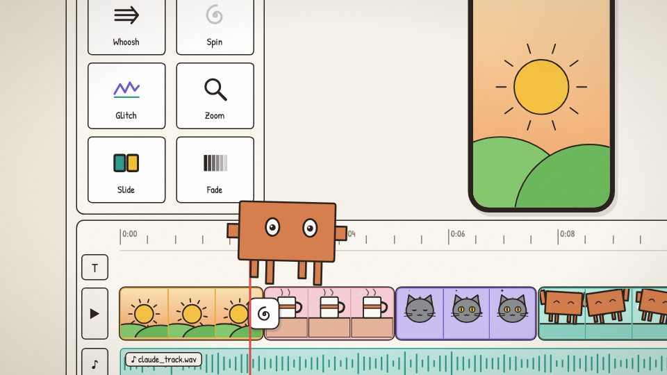

适用：人物 / 对话 / 入门演示
表情和道具配合旁白动作，固定人物身份贯穿解释。
在我们这里如何使用：用轮廓与动作区分角色，避免所有内容只换对话文字。

来自 weilanx README。其作品预览、配方与组件已保存；作者原配音、真人素材和音乐并未在上游公开。
表情和道具配合旁白动作，固定人物身份贯穿解释。
在我们这里如何使用：用轮廓与动作区分角色，避免所有内容只换对话文字。
最早的几期，矢量手绘小人，竖屏 9:16。
src/library/character/BuddyFigure.tsx 矢量小人，有嘴，可以戴配饰（Accessories.tsx）classic 手绘细线风格Show| 期数 | 主题 | 画幅 |
|---|---|---|
| ep00-demo | 30 秒 demo | 横屏 |
| ep01-agent | Agent 是什么 | 竖屏 9:16 |
| ep02-llm | 大模型是什么 | 竖屏 9:16 |